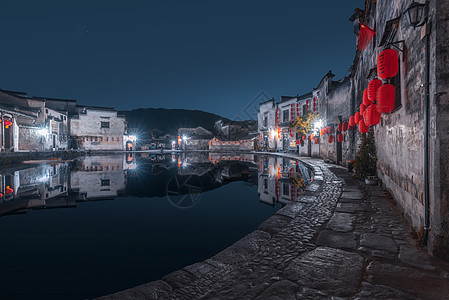
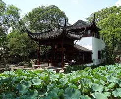

中国传统建筑鉴赏
中国自古地大物博， 传统建筑的组群布局、空间、结构、建筑材料及装饰艺术等方面却有着共同的特点，区别于西方，享誉全球。中国古代建筑的类型很多，主要有宫殿、坛庙、寺观、佛塔、民居和园林建筑等。传统是一个民族或地区在理与情方面的认同和共识，属于文化范畴。传统系指文化传统，传统文化的总体决定传统建筑的基本形态，传统建筑也从一定的角度体现了传统文化的形态，两者是不可分的。因而，传统的特点是具有民族色彩和地方色彩。中国传统建筑正是中国历史悠久的传统文化和民族特色的最精彩、最直观的传承载体和表现形式。
大气
体现在大门、大窗、大进深、大屋檐，给人以舒展的感觉。大屋檐下形成的半封闭的空间，既遮阳避雨，起庇护作用，又视野开阔，直通大自然。大气，最充分地体现了中国传统建筑"天人合一"的思想。
富丽
体现在琉璃材料的使用。它寿命长，颜色鲜艳，在阳光下耀眼夺目，在各种环境中富丽堂皇。其较高的成本，象征着财富和地位。
重山林风水
中国建筑的传统d的重要特点--重山林风水。中国历代的职业风水先生，去除迷信成分，可称得上是选址专家。
有山，易取其势，视野开阔，排水顺畅;有林，易取其物，苍柴丰盛，鸟鸣果香;有风，易得其动，空气清新，消暑灭病;有水，易得其利，鱼虾戏跃，鹅鸭成群。故此，若靠山面水，侧有良田沃土，阳光充沛，兼有舟楫之便，当然是公认得宜于人类生存得最佳选址。
中国传统建筑不仅重自然的山林风水，也重人工的山林风水，让人工的与自然的谐调，院内的与院外的衔接，造成"天上人间"之境，使人产生"此中有真意，欲辨已忘言"的心旷神怡之感。
中国传统建筑的这个特点，体现了"天人合一"的思想，这一思想恰恰与现代人"回归大自然"的欲望相吻合。可见，重山林风水的传统思想必将在现代建筑设计中得以发扬、发展，以创造优美的建筑环境，实现大自然的回归。
而中国繁多的传统建筑派系中最能体现特点的非徽派建筑，园林艺术，四合院三类莫属

徽派建筑以粉墙黛瓦、马头墙为表型特征，以砖雕、木雕、石雕为装饰特色，以高宅、深井、大厅为居家特点徽派建筑坐北朝南，注重内采光；以木梁承重，以砖、石、土砌护墙；以堂屋为中心，以雕梁画栋和装饰屋顶、檐口见长。徽派建筑集徽州山川风景之灵气，融汉族风俗文化之精华，风格独特，结构严谨，雕镂精湛，不论是村镇规划构思，还是平面及空间处理、建筑雕刻艺术的综合运用都充分体现了鲜明的地方特色。尤以民居、祠堂和牌坊最为典型，被誉为徽州古建三绝，为中外建筑界所重视和叹服。

中国古典园林艺术是指以江南私家园林和北方皇家园林为代表的中国山水园林形式。在中国传统建筑中，古典园林是独树一帜有重大成就的建筑。它被举世公认为世界园林之母，世界艺术之奇观，人类文明的重要遗产。其造园手法已被西方国家所推崇和摹仿，在西方国家掀起了一股"中国园林热"。中国的造园艺术，以追求自然精神境界为最终和最高目的，从而达到"虽由人作，宛自天开"的审美旨趣。它深浸着中华文化的内蕴，是中国五千年文化史造就的艺术珍品，是一个民族内在精神品格的生动写照，是我们今天需要继承与发展的瑰丽事业。中国园林建筑艺术是中国灿烂的古代文化的组成部分。它是中国古代劳动人民智慧和创造力的结晶，也是中国古代哲学思想、宗教信仰、文化艺术等综合反映，在历史上却长期为统治阶级和达官贵人所占有享用。但是，在经历了漫长的历程之后今天已经被我们所继承和发展，而为中国广大人民所享用了。

四合院是我们国家一种传统的建筑，全国各地都有，也有了千年的历史了，谈到四合院都会想到北京四合院，比如恭王府等宅子，比较多也比较出名，经典的四合院也更多。四合院的房子里有东南西北四个方位，因为古代人对于方位有尊卑的看法。而且四合院不仅仅是住的地方，它还蕴含着深刻的传统文化，四合院的建筑特点是很讲究风水的。四合院的大小不同，它的样式也有些不一样，比如说，最小的有一进院子，还有二进三进的，越大的四合院似乎一般都是住的大户人家，规矩一般也比较多。